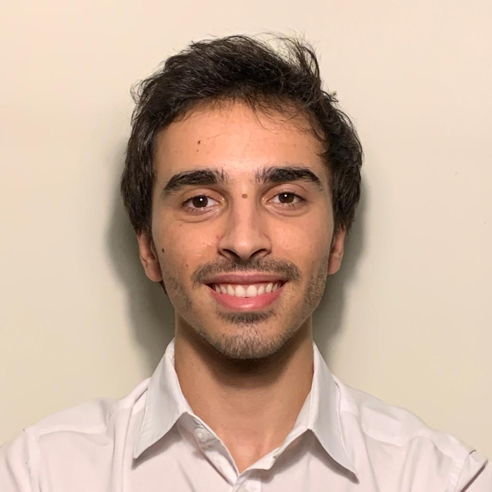

Hi! I'm Miguel Armada 👋

I am a Biomedical Engineer and Intern at
C-mo Medical Solutions
working as a Data Scientist and Machine Learning Engineer. Dedicated
problem solver, eager to contribute my knowledge and skills to
develop innovative solutions. I am highly adaptable and open to
change.
Research Projects
During my studies, I had the opportunity to work on research
projects at BiRD Lab as a research assistant:
Fall Simulation in a 3D Virtual Reality Environment |
Arduino, C#, C++
Waistband for Biometric Data Acquisition | Embedded Systems, C++